Başar!
Odaklan, adan büyüsün.
Çalıştığın her dakika küçük bir adaya can verir. Başar!, ders çalışmayı her gün dönmek isteyeceğin sakin bir alışkanlığa dönüştürür.
Soru ya da önerin mi var? support@basarapp.com
Aşağı kaydır, adayı gezSeansı başlat, odaklan
Süreni seç ya da serbest çalış. Seans boyunca ekran sade kalır: sayaç ve büyüyen bitkin. Seans bitince bitkin adana dikilir, Bilgi Puanı (BP) kazanırsın.
- Neye çalıştığını klasör ve konuyla işaretle
- Yağmur, dalga, orman, şömine ya da kafe sesi
- İsteğe bağlı otomatik molalar
- Seans sonunda nasıl hissettiğini tek dokunuşla not et
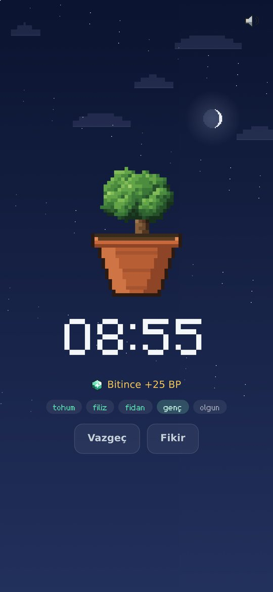
Her gün yeni görevler
Her gün 4 yeni bonus görev, her hafta 7 görev, her ay büyük hedefler seni bekler. Tamamladıkça BP, nadir bitkiler, kedi tüyleri ve gece gökyüzü ödülleri kazanırsın.
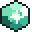
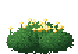
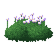
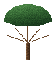
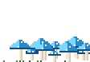
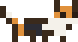
Nadir bitkiler ve tüyler satın alınamaz; yalnızca görevlerle kazanılır.
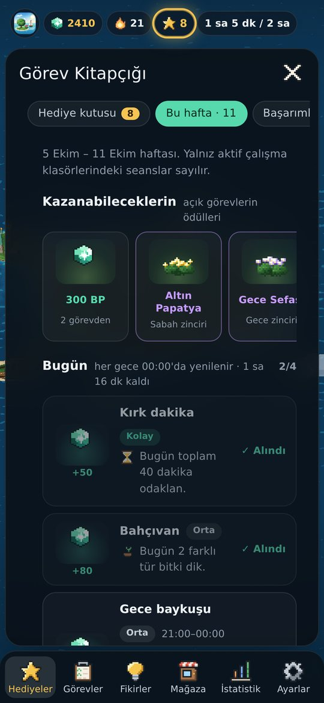
Her gün bir adım
Her gün biraz çalış, serini koru. Serin adana bir anıt diker: 7 günde bronz, 30 günde gümüş, 100 günde altın. Odak saatleri ve tamamlanan görevler gibi başarımlar basamak basamak büyür.
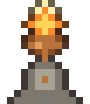
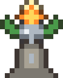
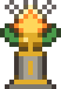
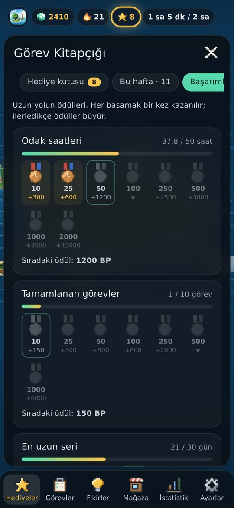
Gökyüzün de büyür
Kutup Yıldızı, kayan yıldızlar, Venüs, Mars, Jüpiter, Satürn, kuyruklu yıldız, kuzey ışıkları, Samanyolu… Gökyüzü ödülleri asla satılmaz; yalnızca emekle ve zorlu görevlerle kazanılır.
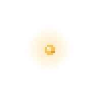
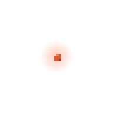
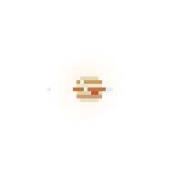
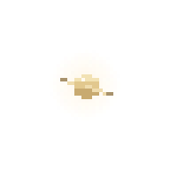
Psst… gökyüzüne dokun, bir dilek tut.
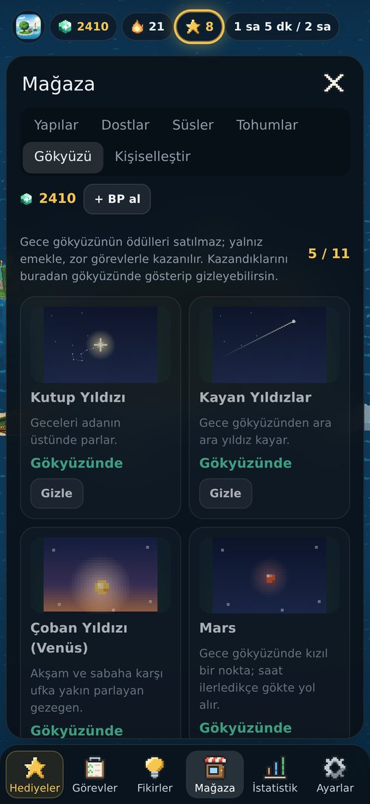
Kendini tanı
Günlük, haftalık, aylık ve yıllık grafikler. En verimli saatlerin, en iyi günün, çözdüğün soru sayısı ve sınavına kalan gün. Her hafta paylaşabileceğin bir özet görseli.
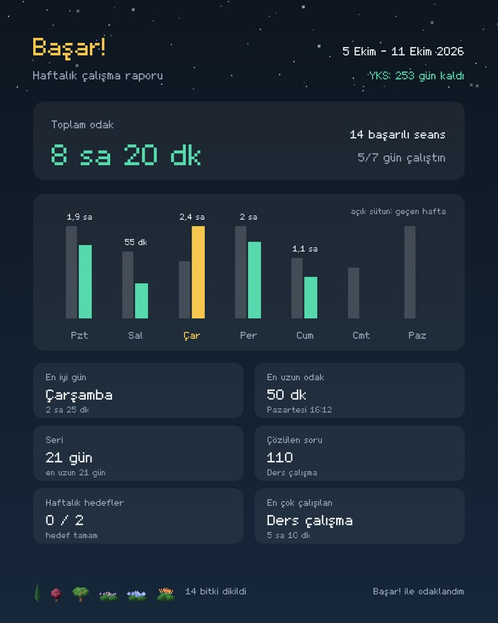
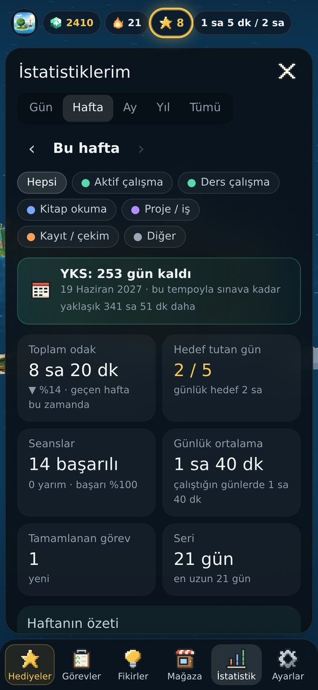
Adada hayat hiç durmaz
Gece ile gündüz, mevsimler, hava ve bayramlar adana yansır. Leylekler gelip gider, kedini sevebilirsin, ara sıra uzak kıyılardan hediyelikler getiren gezgin bir tüccar uğrar. Adanın her köşesinde küçük sürprizler saklı.
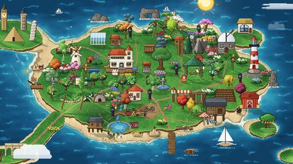
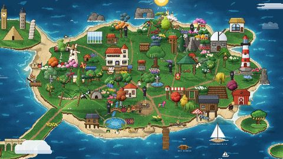
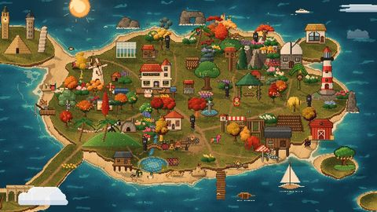
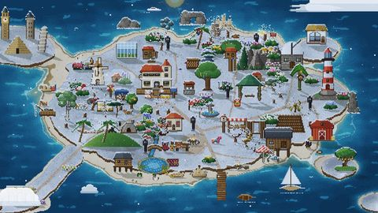
Sakin, güvenli, senin.
İnternetsiz çalışır
Verilerin önce cihazında durur, internete bağlanınca yedeklenir.
Notların sende kalır
Görevlerin, fikirlerin ve dileklerin hiç kimseyle paylaşılmaz.
İstersen arkadaşlar
Arkadaşlarının adalarını gez, küçük hediyeler gönder (13 yaş ve üstü).